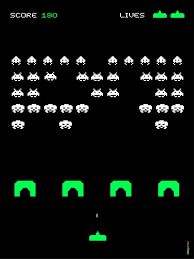
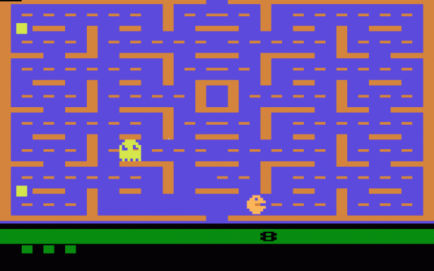
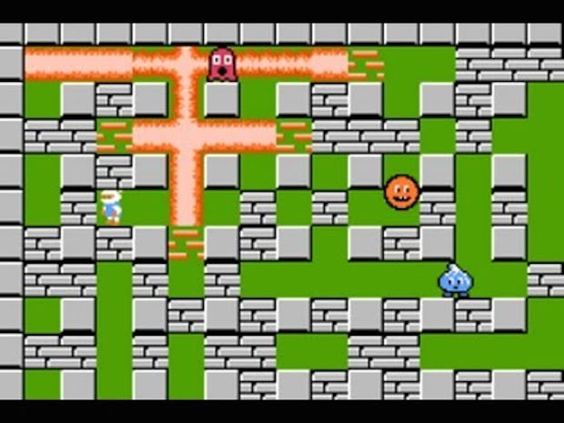
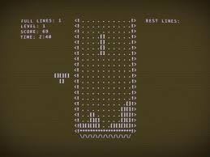

Space Invaders

Space Invaders, lançado em 1978 pela Taito Corporation e desenvolvido
por Tomohiro Nishikado, é um dos jogos mais icônicos e influentes da história dos
videogames. Trata-se de um jogo de tiro em que o jogador controla uma nave espacial,
movendo-se horizontalmente na parte inferior da tela para destruir ondas de alienígenas que descem
lentamente. À medida que os alienígenas são eliminados, sua velocidade aumenta, criando
um desafio crescente. O objetivo é eliminar todos os invasores antes que eles atinjam a parte inferior
da tela ou destruam a nave do jogador. Space Invaders foi um marco na indústria de jogos, popularizando
o gênero de tiro e contribuindo significativamente para a era dourada dos fliperamas.
Seu sucesso inspirou inúmeros jogos subsequentes e é lembrado por sua jogabilidade simples, mas viciante,
além de sua influência duradoura na cultura dos videogames.
Pacman

Pac-Man, lançado em 1980 pela Namco e criado por Toru
Iwatani, é um dos jogos de arcade mais famosos e influentes de todos os tempos. No jogo, os
jogadores controlam Pac-Man, uma figura amarela em forma de pizza, que navega por um
labirinto comendo pontos enquanto evita fantasmas coloridos. Os quatro fantasmas
– Blinky, Pinky, Inky e Clyde – têm comportamentos distintos, tornando a evasão um
desafio estratégico. O objetivo é comer todos os pontos em cada nível sem ser capturado pelos fantasmas.
Além dos pontos normais, há pontos maiores, chamados de "power pellets", que permitem a
Pac-Man comer os fantasmas temporariamente. Pac-Man foi revolucionário por sua jogabilidade inovadora e
acessível, bem como por sua ampla atratividade, transcendo as barreiras de gênero e idade. Seu impacto
cultural é vasto, com inúmeros produtos derivados, programas de TV, e continuações de jogos, consolidando
Pac-Man como um ícone global dos videogames.
Bomberman

Bomberman, criado pela Hudson Soft e lançado em 1983,
é um jogo de ação e labirinto que se tornou um clássico dos videogames. O jogador controla o personagem
principal,Bomberman, cuja missão é colocar bombas para destruir obstáculos e
inimigos dentro de um labirinto, buscando a saída para avançar ao próximo nível. As bombas têm
um alcance explosivo específico e, além de eliminar inimigos, podem destruir blocos
que frequentemente escondem power-ups. Esses power-ups podem aumentar o poder da
explosão, a quantidade de bombas que podem ser colocadas simultaneamente, ou fornecer outras
habilidades especiais.
A série Bomberman é conhecida por seu modo multijogador, onde os jogadores competem
entre si em arenas cheias de obstáculos e power-ups, adicionando um elemento de
estratégia e competição intensa. Com sua jogabilidade simples, mas profundamente estratégica, Bomberman
conquistou uma base de fãs dedicada e gerou numerosas sequências e adaptações para diversas plataformas
de jogos ao longo das décadas.
Tetris

Tetris, criado pelo engenheiro de software russo Alexey Pajitnov em
1984, é um dos jogos de quebra-cabeça mais famosos e duradouros de
todos os tempos. No jogo, peças de formatos variados chamadas "tetriminos" caem de
cima da tela, e o jogador deve movê-las e rotacioná-las para formar linhas horizontais
completas sem espaços. Quando uma linha é completada, ela desaparece, e o jogador ganha pontos. O jogo
termina quando as peças se acumulam até o topo da tela.
A simplicidade e a profundidade estratégica de Tetris o tornam incrivelmente viciante. O jogo exige
habilidades rápidas de tomada de decisão e planejamento antecipado,
desafiando os jogadores a pensar e agir rapidamente. Tetris foi inicialmente lançado para o computador
Electronika 60, mas ganhou popularidade global quando foi lançado para o
Game Boy da Nintendo em 1989.
Campo Minado

Campo Minado (Minesweeper), lançado pela Microsoft em
1990, é um jogo de lógica e estratégia que se tornou um clássico nos
sistemas operacionais Windows. O objetivo do jogo é revelar todas as células de uma
grade sem explodir as minas escondidas. Cada célula pode conter uma
mina ou um número indicando quantas minas adjacentes estão presentes.
O jogador usa essas dicas numéricas para deduzir a localização das minas e evitar clicar nelas.
A jogabilidade simples, mas desafiadora, de Campo Minado exige raciocínio lógico e uma
abordagem meticulosa. O jogo tem vários níveis de dificuldade, variando de principiante
a especialista, com grades maiores e mais minas nas configurações mais difíceis.
Campo Minado se popularizou por ser pré-instalado em muitas versões do Windows, tornando-se acessível a
milhões de usuários em todo o mundo.